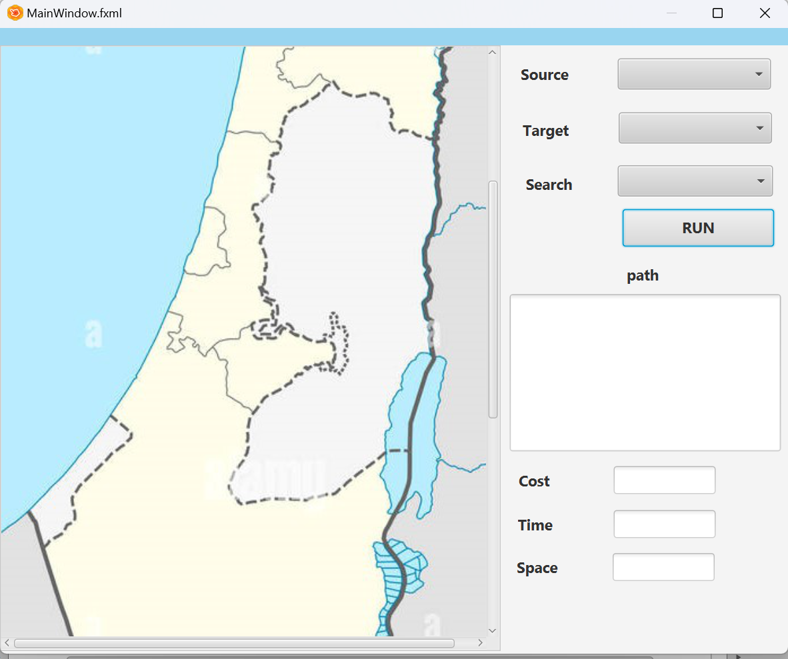

Palestine Map Project
Welcome to the Palestine Map Project! This project is a Java-based program that provides a map of Palestine containing fifteen cities.
The program is designed to find the shortest route between two cities using two different
algorithms: Uniform Cost Search ( UCS ) and A * .
Features:
- Displays a map of Palestine with fifteen cities marked.
- Utilizes two algorithms, Uniform Cost Search and A Star, to find the shortest route between two cities.
- Provides detailed information about the shortest route found.
Installation:
- Clone the repository:
- Open the project in your favorite Java IDE.
- Compile and run the mainAIProject.class file to start the program.
Usage:
- Upon running the program, you will be presented with a map of Palestine containing fifteen cities.
- Enter the names of the two cities between which you want to find the shortest route.
- Choose the algorithm (Uniform Cost Search or A Star) to find the route.
- The program will display the shortest route along with detailed information such as distance, time, etc.

Online Shopping Store Project
Welcome to our Online Shopping Store project! This project is aimed at providing a comprehensive solution for managing an online store using HTML, CSS, and PHP.
Table of Contents:
Introduction:
In today's digital age, online shopping has become increasingly popular. This project aims to create a fully functional online shopping store using HTML, CSS, and PHP, providing users with an intuitive interface to browse products, add them to their cart, and complete transactions securely.
Features:
- User Authentication: Users can register, log in, and manage their accounts securely.
- Product Management: Administrators can add, edit, and remove products from the store.
- Shopping Cart: Users can add products to their cart and proceed to checkout.
- Order Management: Users can view their order history and administrators can manage orders.
Technologies Used: HTML, CSS, PHP, phpMyAdmin
Pictures :
Huffman Coding - Java Project
The Huffman Coding Java project is an implementation of the Huffman coding algorithm, a widely used method for lossless data compression. This project demonstrates our ability to work with advanced algorithms and data structures to optimize data storage and transmission.
Project Features:
- Implementation of Huffman Tree construction and encoding/decoding processes
- Efficient handling of character frequencies and binary encoding
- User-friendly interface for encoding and decoding text files
- Performance optimization for large datasets
Technologies Used: Java and Javafx
This project is a testament to our ability to apply complex algorithms in practical scenarios, providing efficient solutions for data compression.
Dijkstra's Algorithm - Java and SceneBuilder
The Dijkstra's Algorithm project is designed to find the shortest paths between nodes in a graph, a fundamental problem in computer science. This implementation uses Java for the algorithm logic and SceneBuilder for creating an intuitive graphical user interface to visualize the graph and paths.
Project Features:
- Implementation of Dijkstra's shortest path algorithm
- Graph visualization using JavaFX and SceneBuilder
- Interactive user interface for inputting graphs and displaying results
- Real-time updates of shortest paths as the graph is modified
Technologies Used: Java, JavaFX, SceneBuilder
This project highlights our expertise in implementing graph algorithms and creating user-friendly interfaces to solve complex computational problems.
Optimizing Traffic Light Synchronization
Addressed traffic congestion issues by enhancing traffic light timing using a genetic algorithm and a distributed model. Authored a comprehensive research paper detailing the methodology and results, which contributed to improved traffic flow and reduced congestion in urban areas.
Spring-Boot-Hotel-Management-System
Introduction: This repository contains the Entity-Relationship Diagram (ERD) for a comprehensive Hotel Management System. The ERD is a crucial component for understanding the database structure, which is essential for the management and operation of a hotel. It outlines the various entities involved in the system, such as employees, customers, rooms, bookings, and more, along with their attributes and relationships.
The purpose of this ERD is to provide a clear and organized visual representation of the database schema. It helps developers, database administrators, and stakeholders to comprehend how data is interconnected and to ensure that the system is designed for efficient data management and retrieval. This diagram will serve as a blueprint for implementing the database, ensuring that all necessary relationships and constraints are in place to maintain data integrity and support the functionality of the hotel management system.